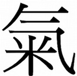

Geomancy
Feng Shui explained
Introduction
Geomancy is the reading of energetic interactions on earth and how they affect us. (geo=earth, mancy=divination or reading). Most ancient cultures (Aboriginal, African, American Indian, Celtic, Chinese, Egyptian, Indian, Nordic, Mayan etc.) have their own systems of explanation. Feng Shui, the Chinese Taoist form of Geomancy, provides one of the most comprehensive and well documented explanations.

Taoism

" The way that can be spoken of
is not the constant way.
The name that can be named
is not the constant name.
The nameless was the beginning
of heaven and earth.
The named was the mother
of the myriad creatures. "
Lao Tzu
"Tao Te Ching"
Taoism is a name, for a way of being not a religion (see the quote).
It is thought to originate from the actions and writings (under duress) of Lao Tzu.
The classic Taoist text the "Tao Te Ching" written by Lao Tzu, sometime between 6 BC and 3 BC, is
poetic in style but sublimely concise, containing many layers of detailed insight. Lao Tzus' later
work, the "Hua Hua Ching", contains more specific information on energetic interactions.
(see reading list for details).
Lao Tzu realised that everything was connected, the planets, the elements and all the living things.
He deduced that there were common elemental forces and attributes that link everything in the cosmos.
By connecting to these forces through Meditation and Taoist practices (such as Qi Gong, Tai Qi
Chuan and Internal Alchemy) one is able to increase physical and subtle energy levels and build a
strong platform for spiritual development. Simplistically it is like connecting the positive
(heaven) and negative (earth) electric leads to give power.
Grounding and rootedness to the earth is the launch pad to the spiritual.
The more grounded you become the subtler the energies you experience.
The subtler the energies you absorb, the stronger you become. Spiritual development is a natural
outcome. Nothing is forced because you have a firm foundation.
Feng Shui - general
The Taoists explained energetic interactions with a system derived from their knowledge of creation. The theory underlying Feng Shui is the same for all Taoist practices including the Martial arts (Tai Qi Chuan, Qi Gong, etc.), Medicine (Acupuncture, Herbal remedies etc.) and Internal Alchemy.The concept of Qi (energy) its creation, varied qualities and interactions is key. There are a number of different Schools (approaches) of Feng Shui (Form School, Compass School, Black Sect School, Flying Star School Classical School). The Classical School is an amalgam of traditional theories and this is explained here.

8 directions (bagua)
Feng Shui - definition
Fengis Qi (energy) that flows above the ground and occupies every space there is, it flows as wind, and is fast moving. It's characteristics are dependent upon the direction in which it flows and the environment it occupies. It can be partially described as electromagnetically charged particles in the atmosphere.
Shui
is Qi (energy) that is contained within the earth and is inherent in the structure of a building (all mass), it is slow moving. Shui can be experienced as a cool blue energy, hence being called water, it is essentially gravitational force.
The practice of Feng Shui aims to balance these energies
to benefit the occupant/s. It is a system of assessing the quality of
energies at play and calculating how they interact.(Yang) above

water - Shui (Yin) below.
Feng Shui - application
A magnetic compass (Lo Pan) is used to determine
site/space orientation, the relevant energies at play and how
they interact. Qi (energy) has different characteristics dependant upon
direction.
( please refer to the 8 Directions section of this site for
details).
Assessment is based on orientation, personal reading and other general observations which are
outlined below.

Lo Pan - Compass
5 Elements
5 Element Cycle
The 5 Elements describe the main types of energy (Taoists identified) in the physical world. Everything in the physical world (visible or invisible - including air, electromagnetic fields etc.) has the overall characteristic of one of the Elements. Understanding their qualities and the way they interact helps us to implement Feng Shui.
Origin
Chinese Taoists discovered a supreme natural power which they called "Wu Qi". Wu Qi means nothingness. All things in the spiritual realm are unified, all things in the physical world are dualities. There have been various cross-over theories to explain this Original force in Scientific speak. One theory is that the "nothingness"& is what Physicists describe as "Dark Matter" or subtle sub atomic entities. Dark Matter makes up the majority of the universe accounting for approximately 90%, with the remaining 10% being the physical universe or what we see as physical (planets, atmosphere, people,stuff). Please see the "advanced" section for more detail. The diagram opposite shows the transformation of energy from subtle to physical. It explains everything. From unity (Wu Qi), splitting into (Yin and Yang(duality)) and then (dependent on the quality and proportions) forming the variety of our world (5 Elements to 64 hexagrams and beyond).
Yin & Yang to 5 elements
The Chinese used a binary system to describe the quality of energy.Yang is (+'ve, male) is a Yin (-'ve, female) is a broken line.(please refer to the Yang section for an explanation). Man is a model of the integration of Yin and Yang. Physical energy is manifested as the body and subtle energy manifested as the mind and spirit.